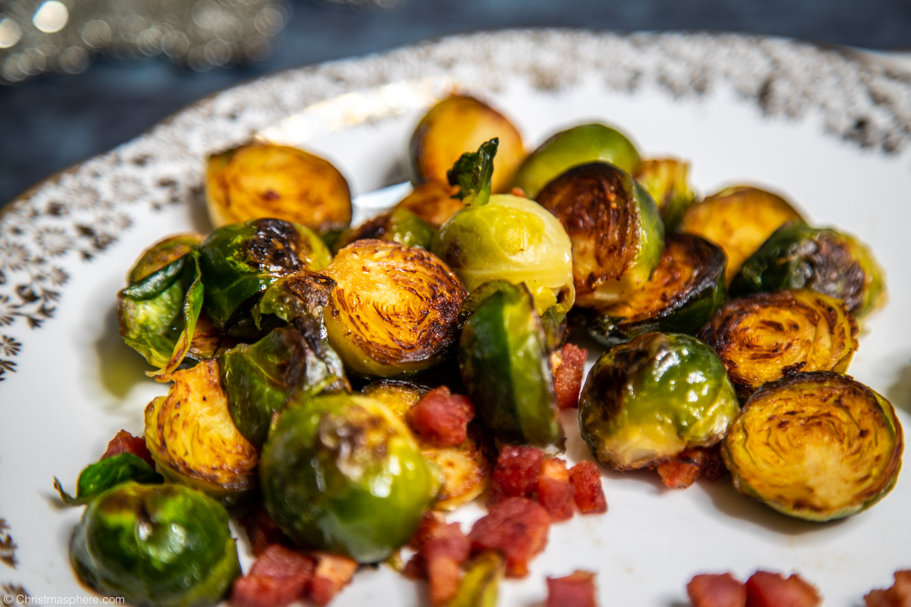

Brussels sprouts, often underestimated, stand tall as a mighty vegetable with a plethora of health benefits and culinary versatility. Packed with essential nutrients like vitamin C, K, and fibre, these miniature cabbages contribute to immune system support, bone health, and digestive well-being. Their cruciferous nature also harbors cancer-fighting compounds, showcasing their potential as a nutritional powerhouse. Beyond their nutritional prowess, Brussels sprouts offer a robust flavor profile—nutty and slightly sweet when roasted or sautéed. Their ability to absorb and enhance various seasonings makes them a culinary chameleon, adapting to diverse dishes. In essence, the Brussels sprout is a small but mighty ally in promoting both health and gastronomic delight.

To make the brussels sprouts is very easy. Trim the sprouts then halve them. Fry them in sesame oil with some smoked pancetta until the sprouts are golden brown in colour and the pancetta is cooked.Serve immediately.
